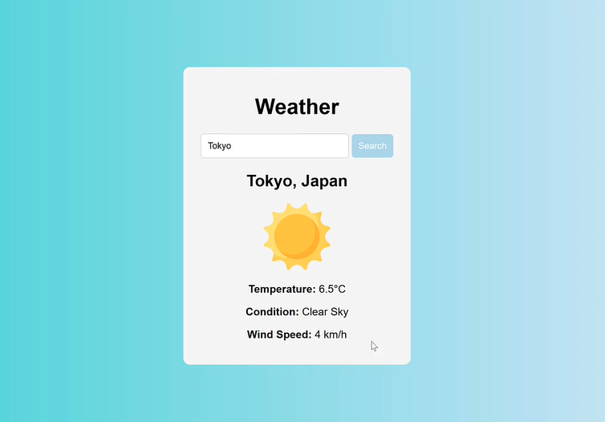

💻 Weather Web App
Build a beginner-friendly weather application using HTML, CSS, and JavaScript APIs.
← Back to Home
Introduction
In this project, you will build a Weather Web App that allows users to search for a city and view the current weather conditions.
You will learn how to work with APIs, handle user input, and dynamically update a webpage using JavaScript.
This project is designed for beginner computer science students and introduces important concepts used in modern web development.
Video Tutorial

- Follow along with the project tutorial
- Learn how APIs work
- Test your skills with the coding challenges further down this page.
Click this card to open the YouTube tutorial used for this assignment.
Example cities to test:
- McAllen
- South Padre Island
- Seattle
- Chicago
- Knoxville
Your application should display weather information clearly and update dynamically whenever a new city is searched.
Need an Extra Challenge?
Here are a few ideas for you to apply what you have learned without using a tutorial:
-
Find a new API to add to your website and include it in your app! This could be:
- UV Index
- Sunrise/Sunset Times
- Population/Demographic Stats
- Google Maps Info
-
Use the other information included in the weather API you implemented in the tutorial, such as the "Last 10 Days" of weather info.
-
Create a "Quick Lookup" feature where popular cities are a click away (Create buttons with city names on them.).
-
Show an error message when users type an invalid city.
-
Add support for Celsius and Fahrenheit conversion.
-
Change the background or colors of the website depending on the current weather conditions.
If you have other ideas, try to implement them with limited help. This is how you truly test your coding skills!